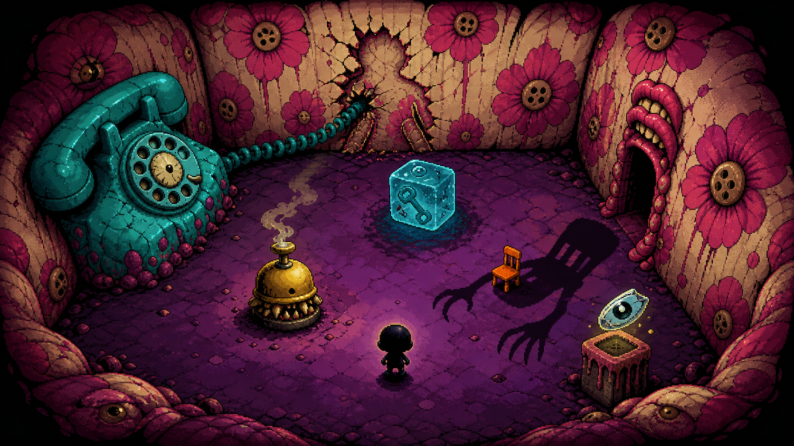

预言抢占实现
你不能取消灾难化思维，但可以搬、推、装、砸、连接或延迟，让它先以较有利的形式成立。
你已经知道那扇门没有打开。你仍相信前面的盒子里藏着一种解释。移动、靠近物品、用自然语言说出真实动作；让灾难按对你更有利的方式发生。

每条预言只有明确、可机器判定的完成状态，但存在多种真实动作路线。路线会留下不同物品关系、来路标签与下一场景条件。
你不能取消灾难化思维，但可以搬、推、装、砸、连接或延迟，让它先以较有利的形式成立。
第一周目只能说你能真实完成的动作。系统将句子绑定到碰撞体、位置、方向和作用。
动作展开成微状态链；物理、关系、信息与故事状态只通过明确桥接条件互相影响。
作品涉及情感虐待、家庭暴力意象、被遗弃体验与灾难化思维。没有写实重演，也不把伤害包装成谜底。